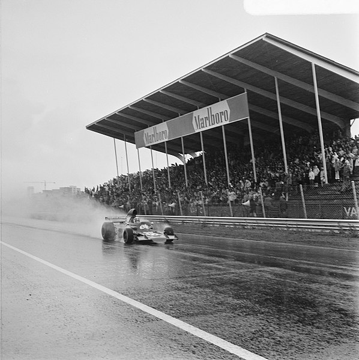
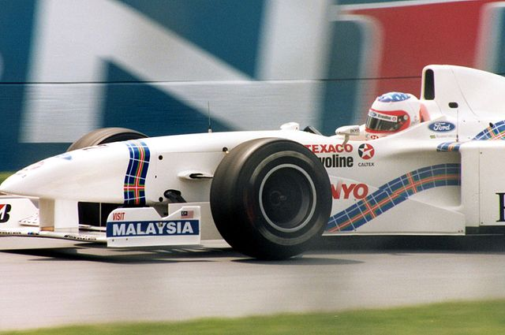
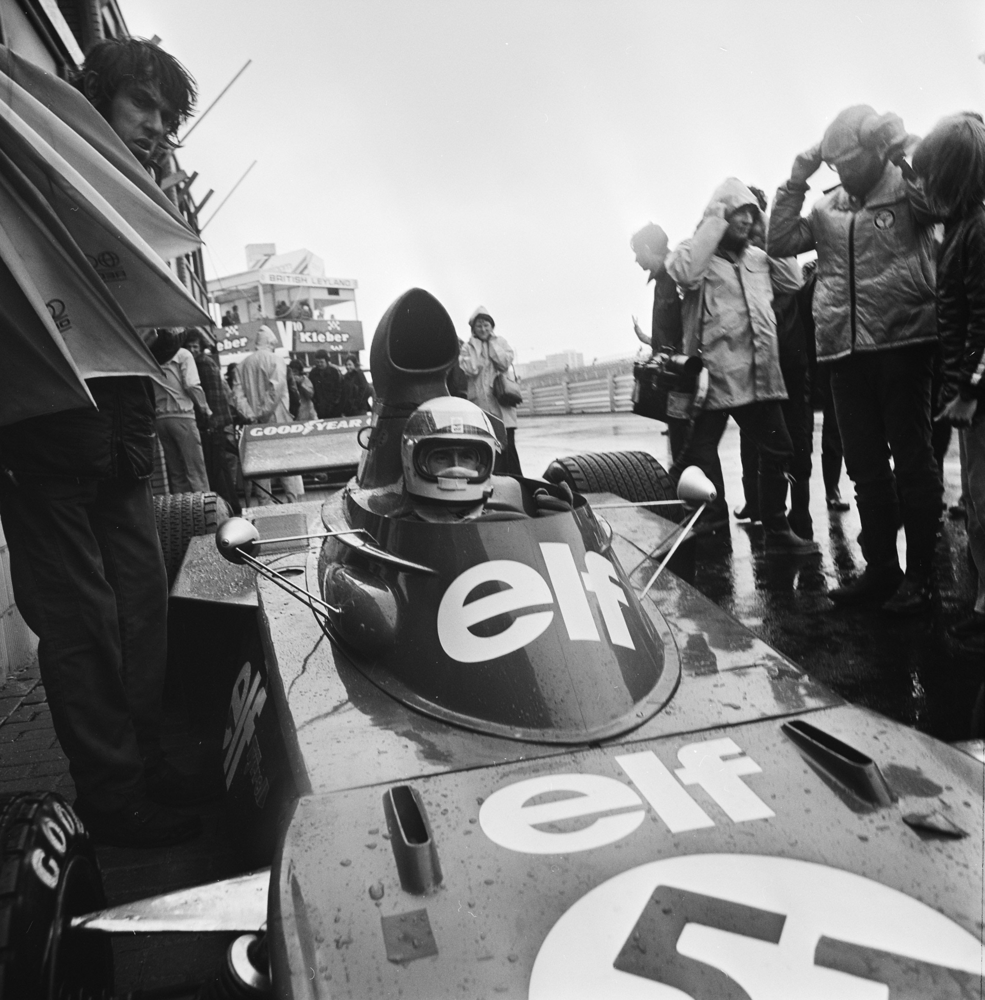
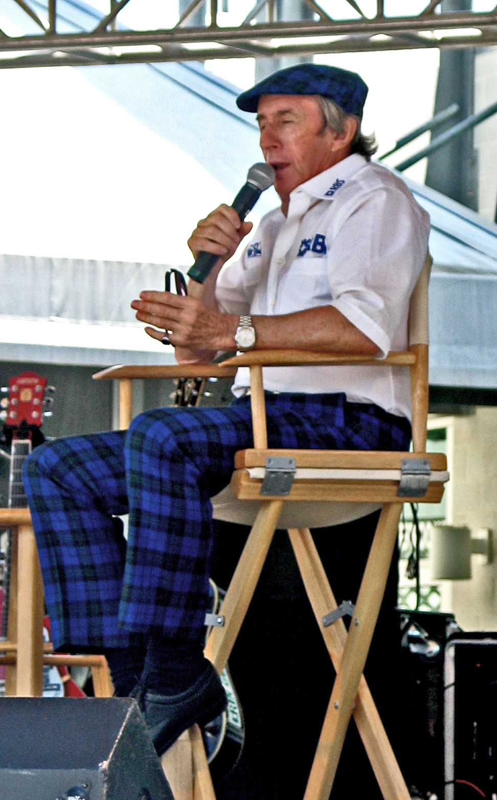
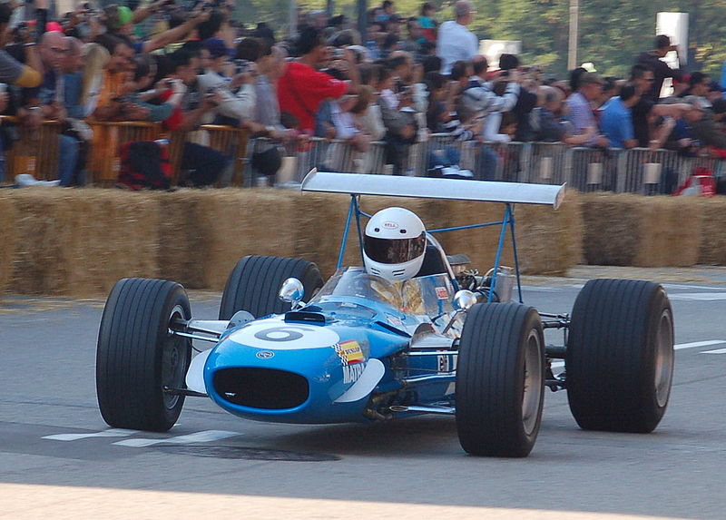
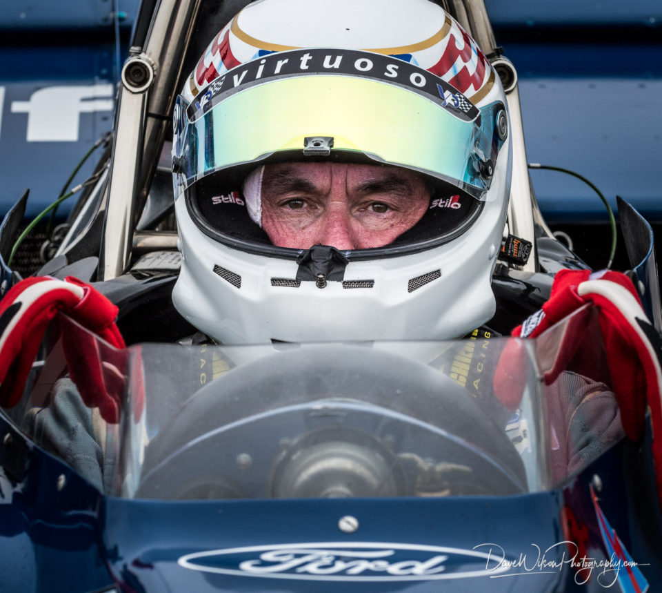
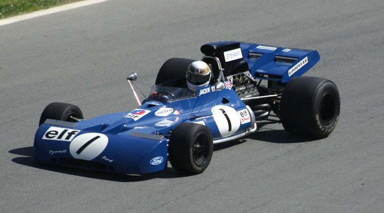

Élete
Sir John Young Stewart (Milton, West Dunbartonshire, Skócia, 1939. június 11. –) autóversenyző, háromszoros Formula–1-es világbajnok, tévékommentátor, Ford-szaktanácsadó. John Surtees 2017. március 10-én bekövetkezett halála óta a legidősebb élő Formula 1-es világbajnok. 1965-ben debütált a Formula–1-be. Olyan versenyzők voltak ellenfelei a szezonban, mint Jack Brabham, Graham Hill, Jim Clark és Bruce McLaren. Második versenyén, Monacóban harmadik lett, emellett három második helyet is szerzett, az olasz nagydíjat pedig megnyerte. BRM-es csapattársa Graham Hill volt. Első szezonjában harmadik lett a világbajnokságban. A következő évre a motorok hengerűrtartalmának 3 liternek kellett lennie, a BRM csapat pedig jelentősen visszaesett, és ezentúl a Ford-Cosworth motorok domináltak. 1968-ra átszerződött a Ken Tyrrell és Jean-Luc Lagardère által alapított Matra csapathoz, melyet már Ford motor hajtott. Itt első évében második lett a Lotusos Hill mögött. A következő évben, óriási előnnyel már világbajnok lett. Stewart pályafutása során 99 Nagydíjon vett részt, ebből 27-et megnyert, és három világbajnoki címet szerzett meg. Futamgyőzelmeinek rekordját csak 1987-ben tudta megdönteni Alain Prost.Pályafutása
| Kategória | Formula–1-es világbajnokság |
|---|---|
| Aktív évei | 1965 – 1973 |
| Csapatai: | BRM, Matra, Tyrrell |
| Nagydíjak száma | 100 (99 rajt) | Világbajnoki címek | 3 (1969, 1971, 1973) |
| Győzelmek | 27 |
| Dobogós helyezések | 43 |
Képek







